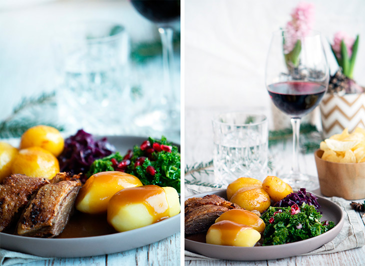
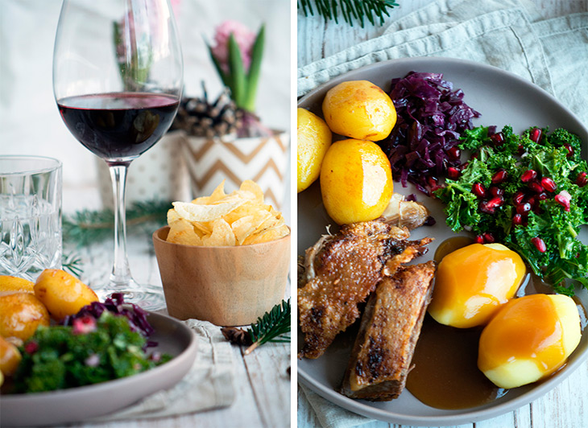
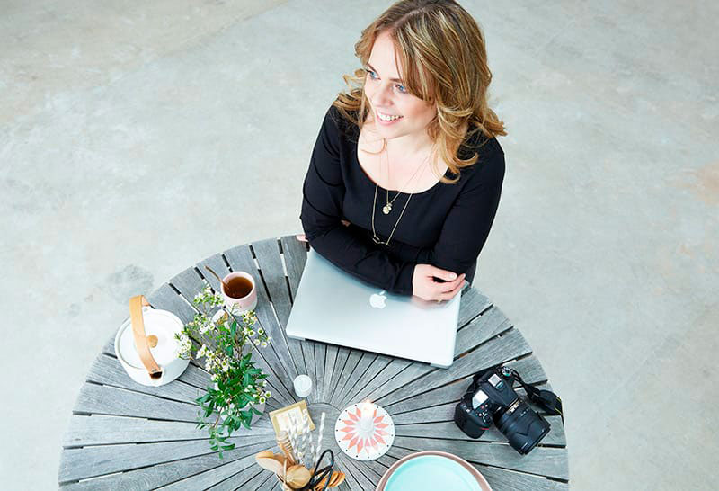
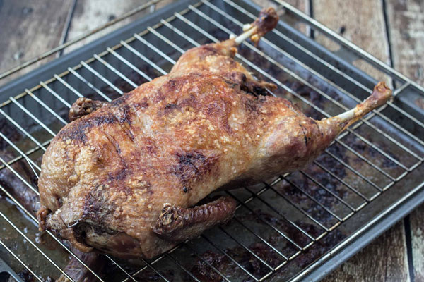
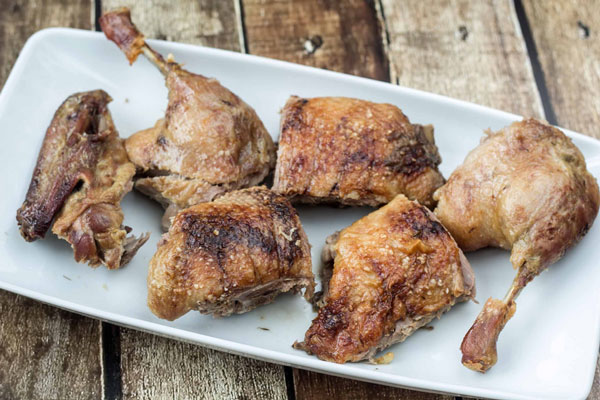
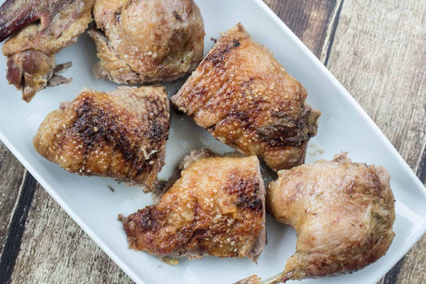
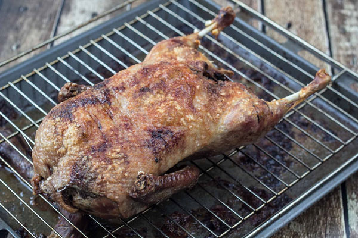
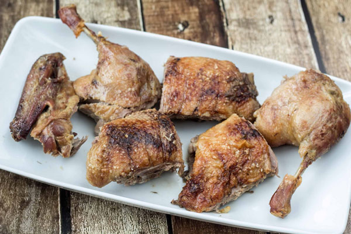
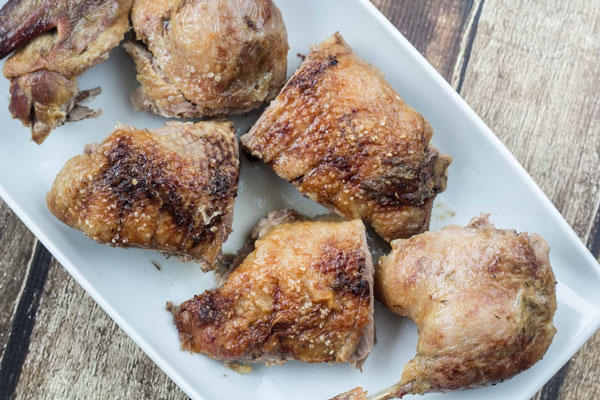

Planlæg din julemiddag med Valdemarsro.dk
Først og fremmest planlægger jeg menuen inden jeg går videre med juleplanlægningen. Det er julemenuen, som jeg tilbereder middagen ud fra og handler ind til. Jeg gennemgår derfor alle mine opskrifter til årets menu og skriver indkøbsseddel ud fra dem. Så gennemgår jeg køkkenskufferne for at se om jeg allerede har nok sukker, vanilje, risengryn, krydderier osv. Det er ret basalt – men det er bare rart at have helt styr på, at den del spiller – så man ikke lige pludselig står og skal afsted midt i middagen. Anden eller gåsen bestilles i god tid og Martin arrangerer indkøb af julevin og portvin. Jeg overvejer derudover hvad der skal købes ind til morgenmad/brunch juleaftensmorgen (vi spiser blandt andet klatkager) og får også lavet en plan for hvor meget vi ellers er hjemme i juledagene og behov for at handle dertil.
Hovedret
Andesteg med appelsin eller klassisk juleand, gåsesteg, confiterede andelår og/eller flæskesteg
Hvide Kartofler
Brunede kartofler
Julesauce
Rå rødkålssalat med æble
Rå grønkålssalat med valnødder og granatæble
Varm rødkålssalat
Ribsgele
Franske kartofler
Drikkevarer
- Rødvin
- Vand
- Solbærsaft eller ribssaft med danskvand og mynte
Dessert
Risalamande med kirsebærsauce og/eller appelsinsauce + honningglaserede mandler
Drikkevarer
- Portvin eller en god kirsebærvin
- Solbærsaft, kirsebærsaft eller ribssaft med danskvand og mynte
Når middagen er planlagt, så går jeg i gang med at få overblik over hvad der skal laves hvornår.
Det skriver jeg ned og hænger på køleskabet – på den måde har jeg overblikket, og Martin (og børnene, når de bliver større) kan se hvad der skal gøres og hvad de kan gøre. Nu bliver det jo sådan lidt ‘det er mig der bestemmer’ agtigt, kan I nok høre – men lige når det angår større arrangementer og herunder også julemiddagen, så fungerer det bare godt, når der er én der tager styringen på at have overblikket, hvilket bestemt ikke betyder, at man skal gøre alting selv.
3-4 dage før juleaften
And eller gås tages op af fryseren til langsom optøning i køleskabet.
Tjek på om der mangler at blive suppleret op på pebernødder, småkager, konfekt – både hjemmelavet og købt juleslik.
2 dage før juleaften
Handle og lav indkøbsliste
1 dag før juleaften
Smut mandler og hak dem på nær to
Kog appelsinsauce
Lav risengrød, lav gerne en hvor vaniljen koges med, som i denne opskrift på risalamande
Skræl små kartofler og kog dem.
Lav varm rødkålsalat
Snit rødkål fint til rødkålssalat
Lav karamel til brunede kartofler
Kan andesteg eller gåsesteg laves nu – det gør jeg og sætter den i ovnen tidligt om formiddagen. Se gerne denne video, hvor jeg viser fremgangsmåde og tips.
Juleaften
Morgen og formiddag
Lav grønkålssalat klar til servering
Lav rødkålssalat klar til servering
Skæl kartofler og stil dem i en gryde med vand
Stil skåle og fade frem på køkkenbordet til anretning af julemiddagen
Hente gran, kogler mv ind fra haven til julebordet.
Dække et smukt og hyggeligt julebord, så snart der er ryddet af bordet efter vores julebrunch.
Sidst på formiddagen; forberede og sætte flæskesteg i ovnen, hvis vi skal have det – langtidsstegning.
Pisk fløde til risalamanden og vend den i risalamanden, hvorefter den stilles på køl, klar til servering senere – husk mandlen.
Mellem kl 16.00 og 17.00
Lav saucen
Lun rødkålssalaten
Varm andesteg eller gåsesteg langsomt op ved 100 grader, husk pensl med fedt og dæk med folie.
Kog kartofler
Tilbered de brunede kartofler
Lun de franske kartofler
Så er alt klar til servering omkring kl 17.30-17.45 – og en skøn julemiddag kan nydes ♡




 




